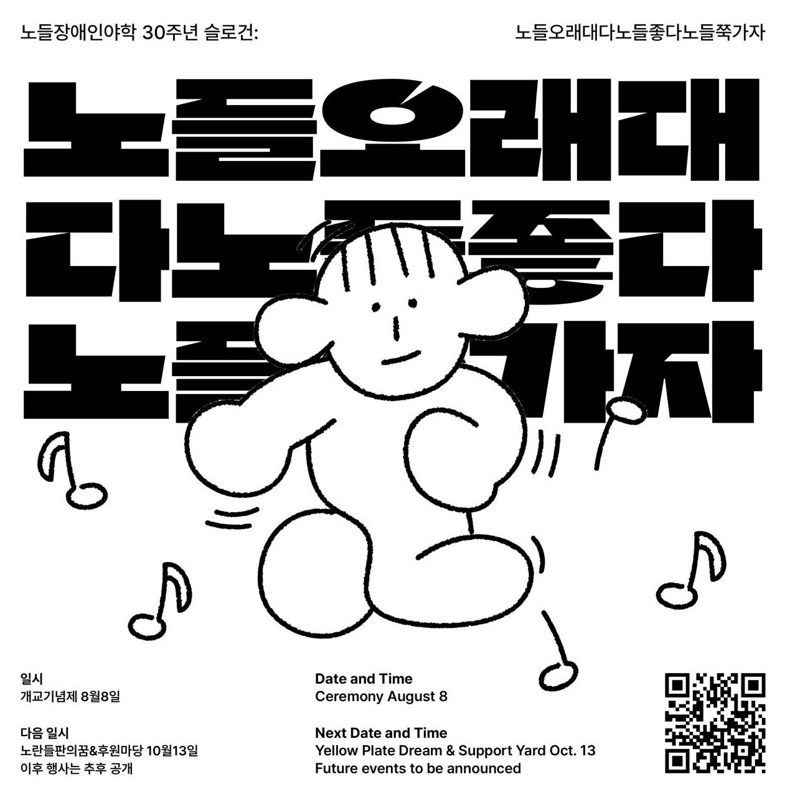
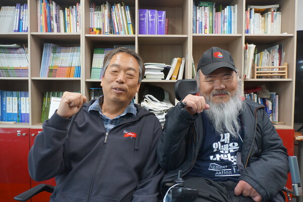
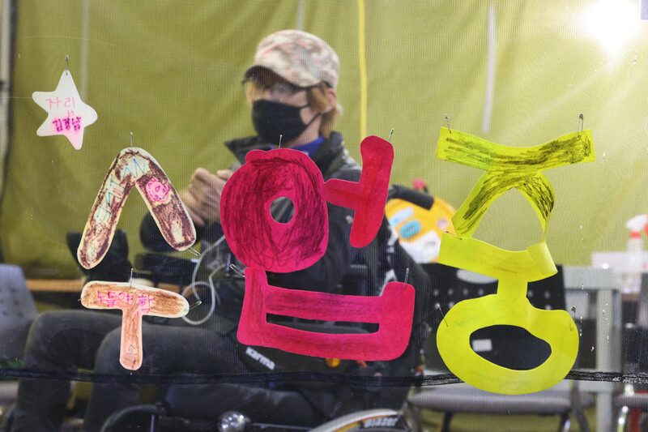

노들에스쁘와
서울형 권리중심 중증장애인 맞춤형 공공일자리
'이것도 노동이다' 춤편 '이것도 춤이다'
노들장애인야학 '노들 에스쁘와' 팀의 연습 영상입니다.
'나, 당신, 우리, 모두'를 표현하는 춤 공연을 준비하고 있어요.
이것도 춤이다 - 노들에스쁘와
2023년 6월 17일 노들야학 30주년 운동회가 예정되어 있습니다.
6월 노들야학의 30주년 뉴스레터를 구독하세요!
23. 06. 27(화)까지 [노들야학 30주년, 나와 노들야학의 이야기, 노들야학에 보내는 편지]를 주제로 백일장을 진행합니다.
‘희망을 일구는 사람들의 터’ 노들장애인야학으로 초대합니다.
만약 당신이 나를 도우러 여기에 오셨다면,
당신은 시간을 낭비하고 있는 겁니다.
그러나 만약 당신이 여기에 온 이유가
당신의 해방이 나의 해방과 긴밀하게 결합되어 있기 때문이라면,
그렇다면 함께 일해 봅시다.
(+)(–)
- 멕시코 치아파스의 어느 원주민 여성
혜화역 2번출구로 나와 마로니에공원을 가로지르면
노들장애인야학(野學)이 있습니다.
야학에서 우리는 함께 공부하고 춤을 추고 노래도 부르고 구호도
외칩니다.
누구와 겨룰 필요도, 이길 필요도 없습니다.
당신이 어떤 모습이든, 당신이 쓰는 언어가 무엇이든.
당신의 옷차림이라든지, 당신의 말투라든지.
당신의 걸음걸이가 어떻든지.
당신이 휠체어를 이용하든지 하지 않든지.
우리는 함께 노동하고 공부하며 세상을 바꿔나갑니다.
조금씩 조금씩 세상의 질서를 무너뜨립니다.
그런 노들장애인야학이 30주년을 맞았습니다.
1993년 아차산 정립회관에서부터 2023년까지 동숭동 유리빌딩까지
지역사회에서 함께 살아가기 위하여 투쟁하며
노란들판을 일구었습니다.
그리고 앞으로 30년도 노들은 이 곳에 있을 겁니다.
밑불이 되고 불씨가 되어.
장애인의 권리가 비장애인과 동등하게 실현될 그 날까지.
우리의 교육과 투쟁의 역사 30주년,
앞으로 장애인을 포함한 모든 사람이 자유롭고 평등한 세상을 만들
때까지
노들장애인야학의 역사는 이어질 것입니다.
'당신의 해방과 나의 해방이 연결된 공간', 노들야학이 30주년을 맞이했습니다.
안녕하세요, 노들장애인야학입니다.

2023년 올해, 노들야학이 30주년을 맞이했습니다. 1993년 8월 8일 처음 학교의 문을 연 노들야학은 지난 30년동안 단지 '장애'가 있다는 이유로 제대로된 교육의 권리조차도 누리지 못한 이들과 함께 하며 배움과 투쟁의 일상을 보내왔습니다.
1993년 아차산 정립회관에서부터 지금의 동숭동 유리빌딩에 이르기까지의 시간 30년. 비장애인 중심의 사회구조 속에서 분명 쉽지 않은 시간들이었지만, 우리는 꿋꿋이 차별에 맞서 싸우며 세상을 조금씩 바꿔왔습니다.
그리고 그 긴 시간동안 노들이라는 ‘희망의 터’를 지켜올 수 있었던 것은 야학을 통해 연결될 수 있었던 수많은 학생, 교사, 동문, 후원인분들의 든든한 지지와 연대가 있었기 때문입니다.
그렇기에 올해 노들야학은 우리 모두가 함께 지난 30년을 기념하고, 또 앞으로의 30년을 같이 꿈꿔볼 수 있는 특별한 자리들을 더욱 많이 준비해보려 합니다.
오는 8월 8일에는 그 어느 때보다도 특별할 [30주년 개교기념제]가, 10월 13일에는 노들의 30주년을 다함께 축하하는 [노란들판의 꿈]과 학생무상급식을 위한 후원행사 [평등한 밥상]이 기다리고 있습니다.
아울러 올해는 [노들에스쁘와], [노들 쿵쿵차카차카] 등 권리중심공공일자리에 참여하고 있는 학생분들의 문화예술활동을 함께 느끼고 즐길 수 있는 자리들을 많이 준비하고 있습니다.
매일매일이 축제이자 잔치가 될 노들야학의 2023년. 모쪼록 많은 관심과 참여 부탁드립니다. 노들장애인야학의 30주년을 함께 축하해주세요! 그리고 함께 세상을 바꿔봅시다.

🔔 본격적인 행사에 앞서 노들야학의 30주년을 대표할 수 있는 슬로건을 정해보고자 했습니다. 30주년을 맞이한 노들야학이 야학의 안과 밖 사람들에게 꼭 이야기하고 싶은 진솔한 내용을 짧은 문구로 표현해보는 것이었죠. 그렇게 지난 3월 한 달 동안의 슬로건 공모를 통해 야학 학생, 교사, 활동지원사 등은 물론 야학 안밖의 많은 분들에게서도 여러 다양하고 소중한 의견들을 들어볼 수 있었습니다.
그 결과 개성 넘치고 재밌기도 혹은 사뭇 진지하디도 한 여러 제안들이 많았습니다. 그 중에서도 특히 청솔 3반 최원균 학생이 응모한 “노들오래대다노들좋다노들쭉가자”가 번뜩 모두의 눈과 귀를 사로잡았습니다.
사실 원균의 슬로건은 맞춤법도 띄어쓰기도 다소 틀린 문장이지만, 슬로건 속 원균의 당찬 목소리와 야학을 아끼고 좋아하는 마음이 너무나 잘 느껴진다고 생각했어요. 직접 입으로 연이어서 말해보면 마치 구호 같기도 하구요.
그리고 실제로 야학의 30주년과 다 뜻이 통하고 연결되는 말들이기도 해요. 말그대로 노들은 오래되었고, 노들은 좋고, 앞으로도 노들이 쭉 가길 우리 모두가 바라니까요.
그렇게 모두의 의견이 만장일치가 되어 “노들오래대다노들좋다노들쭉가자”가 빠르게 올 한해 노들야학의 30주년을 대표할 슬로건으로 선정되었습니다.
올해 여러 행사들 속에서 우리의 슬로건이 더욱 그 빛을 발하길, 당사자의 당당한 목소리로 외쳐지길, 그리고 다들 흠뻑 좋아해주시길 바래봅니다.
 (+)(–)
(+)(–)
사진 한 가운데 정체를 알 수 없는 포즈(?)를 취하며 기뻐하고
있는 사람이 이번 30주년 슬로건의 주인공 청솔 3반 최원균
님입니다. "노들오래대다노들좋다노들쭉가자!" 원균님의 슬로건
모두 좋아해주실 거라 믿어요!
“노래만들고 노래부르고 연주도하고 춤도추지요
쉽지않지만 잘만들어요 잘안될때는 노력합니다
노래불러요 노들노래공장
불러주세요 노들노래공장 우리가간다”
노들 노래 공장(노노공)은 노들 야학의 권리중심 중증장애인맞춤형 공공일자리에서 일하는 노동자들이 2022년 2월부터 매주 한 번 함께 모여서 노래를 만드는 곳입니다. 노노공의 기조는 “우리의 노래 우리가 만든다“로, 하고 싶은 이야기를 노래라는 방식으로, 스스로 노랫말과 가락을 지어 부른다는 목표를 가지고 있습니다.
올해 4월, 노노공의 그동안 작업물들을 모아 홈페이지 nonogong.kr 방문하기 를 오픈했습니다!
노노공에서 만든 노래와 악보, 음원, 영상을 보실 수 있고, 노노공 소개와 구성원들 소개도 담겨있어요. 매주 노래를 만드는 노노공에 신청곡을 의뢰할 수도 있으니, 꼭 한번씩 들어오셔서 노래도 들어보시고 노래도 신청해주세요.
노래는 만들때마다 새롭게 업데이트 됩니다!
한국 장애해방운동의 상징과도 같은 노들야학은 개교 30주년을 맞아 이미 이곳저곳에서 많은 주목을 받고 있답니다! 이번 뉴스레터에서는 지난 4월 24일 한겨레 신문에 실린 천성호, 김명학 두 공동교장 선생님의 인터뷰 기사, 그리고 노회찬 재단과 한겨레신문이 공동기획한 ‘6411의 목소리’에 천성호 공동교장 선생님이 기고하신 2편의 글을 공유드립니다.
[한겨레] “30주년 맞은 노들, 한국 장애해방운동의 받침돌이죠”
노들에서 가장 크게 배운 게 뭐냐는 질문에는 “내 주체관이 변한 것”이라고 김 교장은 답했다. “그 전에는 우물 안 개구리였어요. 지금도 답답한 감은 있지만요. (노들에서) 우리가 끊임없이 요구하고 싸우면 사회가 조금씩 변한다는 것을 알게 되었죠. 우리가 싸우지 않으면 사회는 변하지 않아요. 우리 사회는 비장애인 위주입니다. 저 같은 중증장애인이 살아가려면 사회가 변해야 합니다. 사회 환경이 바뀌어야 장애인과 비장애인이 사회의 한 구성원으로 함께 살 수 있어요.”

[한겨레] 노들장애인야학, 30년간 차별과 맞서 싸우는 학교
"장애인들은 6411번 버스를 타지 못했다. 장애인은 투명인간, 목소리 없는 사람들, 배제된 사람들이었다. 비문명적·비장애인 중심 한국 사회에 맞서 야학은 천천히, 조금씩, 세상과 맞서 싸워나가고 있다. 노들장애인야학은 올해 8월이면 개교 30주년을 맞는다. 장애인의 권리를 찾기 위해 싸워온 30년은 장애인이 비장애인과 ‘함께 살고자’ 외친 30년이기도 하다. 앞으로 우리 야학은 장애인을 포함해 모든 이들의 자유와 평등을 노래하며 투쟁해 나갈 것이다."

이 땅에서 살아가는 장애인 인구 중 44%가 초등학교를 겨우 졸업한 학력으로 살아갑니다.
노들장애인야학은 학령기에 장애때문에 학교 교육을 받지 못한 성인 중증장애인이 모여서 검정고시, 인권교육, 인권활동을 함께 하며, 장애인의 교육 활동을 하는 공간입니다. 여러분께서 후원해주시는 소중한 돈은 노들장애인야학의 지속가능한 활동을 위해 사용됩니다.

정기후원으로 노들장애인야학의 활동에 함께 연대해주세요!
John Provencher is a graphic designer and developer. He publishes work through his practice haha.services while teaching at The New School. Recently, he made a screensaver.
Laurel Schwulst has been making websites since the year 2000. Her design practice is called Beautiful Company, and she has taught at Yale, Princeton, Rutgers, and California College of the Arts. She also created ambient travel app Flight Simulator.
|
Fruit
|
Name
|
ID
|
|---|---|---|
| Yehwan Song | Guest | |
| 🍈 | Ritu Ghiya | Guest |
| 🍒 | Min Guhong | Guest |
| 🍐 | Elliott Cost | Guest |
| 🍓 | Ian Glover | Guest |
| 🍒 | Cindy Hoffman | Student v1.2020.winter |
| 🍑 | Kyle Richardson | Student v1.2020.winter |
| 🥭 | Neeta Patel | Student v1.2020.winter |
| 🍋 | Sangah Shin | Student v1.2020.winter |
| 🍊 | Maria Alyssa Stiller | Student v1.2020.winter |
| 🍌 | Daniel Choi | Student v1.2020.winter |
| 🍑 | Dawn Sinkowski | Student v1.2020.winter |
| 🥭 | Shannon McLean | Student v1.2020.winter |
| 🍐 | Gabriel Cisneros | Student v1.2020.winter |
| 🥭 | Coco Yuan | Student v1.2020.winter |
| 🍇 | Tommy Martinez | Student v1.2020.winter |
| 🍇 | Maya Man | Student v2.2020.fall |
| 🍎 | Jarret Bryan | Student v2.2020.fall |
| 🍑 | Simone Robert | Student v2.2020.fall |
| 🍓 | Naomi Moser | Student v2.2020.fall |
| 🍑 | Jieun Kim | Student v2.2020.fall |
| 🍌 | Maxwell Neely-Cohen | Student v2.2020.fall |
| 🥭 | Vanya Padmanabhan | Student v2.2020.fall |
| 🥭 | Tee Topor | Student v2.2020.fall |
| 🍐 | Raegan Bird | Student v2.2020.fall |
| 🥭 | Siri Lee | Student v2.2020.fall |
| 🍋 | Nani Harakawa | Student v3.2021.winter |
| 🥭 | Anna Purna Kambhampaty | Student v3.2021.winter |
| 🥭 | Mira Kaplan | Student v3.2021.winter |
| 🍎 | Jamie Evelyn Goldsborough | Student v3.2021.winter |
| 🍋 | Emary Parisi | Student v3.2021.winter |
| 🍉 | Seung-a Han | Student v3.2021.winter |
| 🥥 | Yelim Ki | Student v3.2021.winter |
| 🍓 | Robert Levine | Student v3.2021.winter |
| 🍓 | Stella Choi | Student v3.2021.winter |
| 🍌 | Victoria Pandeirada | Student v3.2021.winter |
| 🍌 | Jonathan Xue | Student v3.2021.winter |
| 🍏 | Hatt Merlino | Student v3.2021.winter |
| 🍉 | Rebecca Steedman | Student v3.2021.winter |
| 🍋 | Kee Wei Chin | Student v3.2021.winter |
| 🥝 | John Provencher | Teacher |
| 🍒 | Laurel Schwulst | Teacher |
When and where
are classes held? (+)(–)
Starting in Fall 2020 and continuing in Winter
2021, the workshop is 100% virtual. It happens wherever you are
as long as you have a computer with a stable internet
connection. The workshop will run for 6.5 weeks total and will
meet synchronously twice a week: Wednesday evenings 7–8pm EST
and Sunday afternoons 12–3pm EST.
Dates for Winter
2021 session: 2.7, 2.10, 2.14, 2.17, 2.21, 2.24, 2.28, 3.3, 3.7,
3.10, 3.14, 3.17, 3.21.
Do I need any
coding knowledge prior? (+)(–)
No ... and it’s never too late to start! We view learning as a
lifelong process, and we are excited to see how your previous
experiences will inform what you create.
What's Fruitful
School’s approach to remote learning during the global pandemic?
(+)(–)
With care, optimism, and realness.
We think it is up to us (the students, teachers, and guests of
Fruitful School) to accept that the pandemic and remote learning
is hard but also as an opportunity to be a portal to some new
world. we are truly living and breathing the medium (websites!)
in new and important ways with more people around the world.
We also want to continue to remember that we’re in a public
health crisis. Let’s be empathetic to each other since none of
us are truly "ok." We want to cultivate a caring, understanding,
and supportive learning environment.
We'll be limiting prolonged screen time in the workship itself.
We'll be splitting up our meetings into two shorter sessions
that re-occur weekly for 6 weeks. We'll be providing just as
much synchronous work as asynchronous work. See you with your
fruit and water ( stay hydrated! )
What will we do
during each synchronous session? (+)(–)
Lectures, discussions, demos/exercises, class workshopping and
guidance.
What will be
provided for asynchronous time? (+)(–)
references, links, videos, readings and more!
How much does
it cost? (+)(–)
$1,500 — note there are no scholarships this winter 2021 session
left, but in future sessions we hope to have some half-priced
spots
Why does the
workshop cost money? (+)(–)
We're interested in building a sustainable school — one that can
continue over the years.
We have dreams for Fruitful School to be a place for many
different ways to learn beyond the workshop. In the future, we
would like to grant more people access to our materials — both
free and paid versions. By taking a workshop, you support us to
continue Fruitful School.
Will there be
future workshops? (+)(–)
Yes. Subscribe for more updates.
Will there be
other ways to get involved? (+)(–)
We're currently working on ways for people to get involved
outside the workshop. We'll be making guides for our
asynchronous learning materials. Think “class without the class”
— a digital publication you can follow at your own pace.
We are currently working on the guides. Subscribe for
updates.
Why did you
start this school? (+)(–)
We love talking about, teaching and making websites! We’re
hoping this can be a home to cultivate new ways of publishing to
the www.
We think this skill is even more needed than ever before. We are
excited the workshop can be more accessible to those around the
world through remote learning.
Since we all come from different backgrounds and want to create a safe and open environment for collaboration, we've created a code of conduct to better interact with each other as students and teachers.
our code of conduct is a work in progress. it was inspired by others and continues to evolve through use. see original blog post for more info.
서울형 권리중심 중증장애인 맞춤형 공공일자리
'이것도 노동이다' 춤편 '이것도 춤이다'
노들장애인야학 '노들 에스쁘와' 팀의 연습 영상입니다.
'나, 당신, 우리, 모두'를 표현하는 춤 공연을 준비하고 있어요.
이것도 춤이다 - 노들에스쁘와